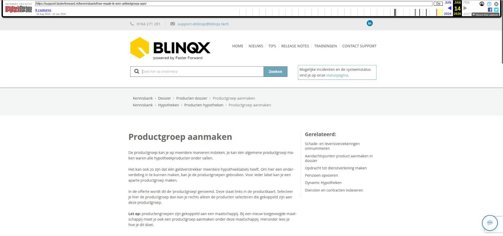

ADN module – tabbladen overzicht

Tekstinhoud
Title: ADN module - tabbladen overzicht | Support
URL: https://web.archive.org/web/20260114010355/https://support.fasterforward.nl/kennisbank/adn-tabbladen-overzicht/
Source element: <article>
---
ADN module – tabbladen overzicht
Wanneer je in het overzicht 'Prolongatie import' zit, zie je verschillende tabbladen. Hieronder worden de tabbladen verder toegelicht.
Overzicht
Verschillen
Niet ontvangen
Posten afvinken
Niet ontvangen posten in controlelijst (alleen bij TP incasso)
PDF specificaties (werkwijze zonder tussenrekening)
Handmatig prolongeren
Geen prolongatiedatum
Matches
Import
Instellingen
AFD berichten (alleen bij TP incasso)
Overzicht
Hier vind je een overzicht van alle ingelezen batches per maatschappij. ABZ bepaald de aanlevering van de batches, deze kunnen opgesplitst zijn. Deze batches kan je verwerken. Meer informatie hierover vind je op de pagina 'prolongatie import'.
Verschillen
Hier worden alle polissen weergegeven waarbij er een provisie verschil is geconstateerd, te herkennen aan het rode rekenmachine in de eerste kolom. Dit betekent dat het provisie bedrag wat de maatschappij doorgeeft, afwijkt van de verwachting van eBlinqx. In het tabblad Verschillen kan je de posten selecteren en vervolgens klikken op 'Markeer geselecteerde posten als gecontroleerd'. Hiermee geef je aan dat de specifieke post van deze batch is gecontroleerd en goedgekeurd. De post verdwijnt uit de lijst in de betreffende RC periode. De post wordt niet automatisch in andere RC periodes gecontroleerd en verdwijnt niet uit de lijst bij andere RC periodes.
Niet ontvangen
Dit is een overzicht waarvan eBlinqx verwacht dat deze gaan prolongeren (omdat deze de vorige periode wel geprolongeerd zijn), maar die niet aangeleverd zijn door de maatschappij. Je kunt deze posten controleren.
In de meeste gevallen zal het hier geroyeerde polissen betreffen die middels een mutatiebatch of handmatig geroyeerd moeten worden. Wellicht is er een polis geroyeerd, maar staat deze in eBlinqx nog niet als geroyeerde polis. Dan kan je deze polis in eBlinqx royeren en archiveren. De archiveerde polis wordt dan automatisch verwijderd uit de lijst onder het tabblad Niet ontvangen.
Indien de totalen van de batch, waarbij er gefilterd is op de polissen met ADN match = Ja , correct zijn kun je de niet ontvangen posten negeren.
Het tabblad wordt pas gevuld als je gebruik maakt van de knop 'provisie overnemen van de maatschappij' (als je werkt met de tussenrekening 1230). Druk je niet op deze knop bij het verwerken van de ADN batches dan zal het tabblad leeg blijven, omdat er in het systeem geen vergoedingen bekend zijn. Het tabblad is niet zichtbaar wanneer je geen gebruik maakt van de financiële verwerking bij wegboeken van posten.
Posten afvinken
Zoals aangegeven controleer je de polissen en bijbehorende productkaart. Het is mogelijk om de gecontroleerde posten af te vinken. Met het afvinken geef je aan dat je geen prolongatie meer hoeft te ontvangen en/of je de productkaart hebt aangepast. Het afvinken doe je door de checkbox voor de betreffende post aan te klikken. De afgevinkte posten zullen uit de lijst verdwijnen, nadat je hebt geklikt op 'Markeer geselecteerde posten als gecontroleerd'. Op deze manier kan je het tabblad 'Niet ontvangen' actief bijwerken.
Niet ontvangen posten in controlelijst (alleen bij TP incasso)
Deze 'ontbrekende' posten zie je ook terug in de controlelijst van de batches en worden aangegeven met een rood papier icoon in de kolom 'match'. Dit icoon zie je alleen als een TP incasso klant bent.
Bij het icoon staat de melding 'Bijbehorend ADN bericht kan niet worden gevonden'. Bij deze posten wordt er gekeken naar alle offertes binnen eBlinqx voor de betreffende maatschappij, de RC periode en of er polissen zijn die niet in de batch zitten (maar die wel verwacht worden). Dit wordt gedaan op basis van de "Laatste prolongatie"-datum uit de kaart en daar wordt het prolongatie termijn bij opgeteld. Als die datum in de RC periode valt wordt hij aan de controlelijst toegevoegd. Deze 'verwachte posten' staan dus niet aangeleverde ADN bericht, vandaar de melding 'Bijbehorend ADN bericht kan niet worden gevonden'.
PDF specificaties (werkwijze zonder tussenrekening)
Bij het afronden van de batch (werkwijze zonder tussenrekening) wordt er één boeking overgemaakt naar de rekening-courant maatschappij. Je wilt natuurlijk wel zien wat voor posten er in dat bedrag zitten. Daarom wordt er na het afronden van de batch een specificatie gemaakt, waarin al deze losse posten staan. Deze specificatie is terug te vinden onder het tabblad PDF specificaties.
Handmatig prolongeren
Indien een maatschappij de prolongatie niet via ADN/ Aplaza aanlevert kan je de prolongatie handmatig invoeren. Hier lees je meer over het handmatig prolongeren van TP incasso posten. Hier lees je meer over het handmatig prolongeren van maatschappij incasso posten.
Geen prolongatiedatum
Dit tabblad geeft een overzicht van alle polissen die geen Laatste prolongatie datum hebben staan. Dit zijn alleen lopende polissen. Het veld laatste prolongatiedatum wordt gevuld via het ADN XML bericht met het element PP_PVADAT. De posten in dit overzicht hebben geen ADN berichten binnengekregen waar dit veld gevuld stond. Dit overzicht kan je gebruiken om dit te controleren.
Matches
In dit tabblad staan alle matches tussen posten uit ADN batches en polissen in eBlinqx. Deze matches kunnen zowel handmatig als automatisch zijn gemaakt.
Handmatig toegevoegde matches zijn door een gebruiker met het koppelteken in een ADN batch aan een polis gematcht.
Automatische matches heeft eBlinqx gekoppeld door een binnengekomen post te matchen aan een polis op basis van het polisnummer.
Bij handmatig koppelen van een ADN bericht aan een polis, wordt het polisnummer van het ADN bericht bijgewerkt in het tabblad 'Matches'. Let op: het polisnummer wordt niet in het dossier aangepast. Als een polisnummer in de productkaart wordt aangepast dan verdwijnt deze uit het tabblad matches. Dit geldt ook als een match in de batch handmatig ongedaan wordt gemaakt.
Import
Indien je de prolongatie van een maatschappij niet via ADN ontvangt, kan je hier handmatig een batch aanmaken door een .csv bestand te uploaden. Let op je dient hiervoor eerst een template aan te maken in het tabblad 'templatebeheer'
Instellingen
Hier selecteer je de grootboekrekeningen waar de provisie op geboekt wordt. Tevens is het mogelijk om hier de provisie marge per maatschappij in te stellen voor afwijkende bedragen.
AFD berichten (alleen bij TP incasso)
Hier kan je alle AFD berichten terugvinden. Onder de tabel 'Batch' staat 'Openen' waarmee je direct de betreffende batch kunt openen. Het kan gebeuren dat deze kolom leeg is. Een oorzaak kan zijn dat het bericht niet in het juiste formaat, bijvoorbeeld edifact, is aangeleverd. Het bericht moet in het type .xml aangeleverd worden.
Laatste update: 11 november 2025
Was deze informatie nuttig?
Ja Nee